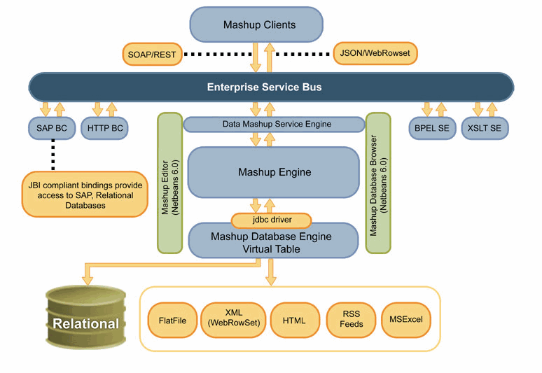

|
The purpose of Open Data Services is to build a Data Services platform as part of Project Mural (Open Data Management). Data Services is an application of SOA patterns to the larger Data Management problem. It is a way of publishing master data that provides views of different instances of master data (for example, product or customer) and of publishing master data as a catalog service, search service, and so on.
Building Blocks
Data Services platforms enable creation, deployment, and management of services that perform the following functions:
- Universal data access (relational sources, web sources, desktop sources, and so on)
- Data transformation (the "T" in ETL)
- Data movement (ETL/ELT, migration, and replication)
- Data audit
- Data quality (the key)
- Matching, standardization, cleansing, and profiling
- Metadata management (compliance)
A Data Services View of Mural
Data Integrator
- Data transformation/movement service
- Archival service (with possible storage layer integration)
- Import/export service (spreadhsheet, flatfile, XML to MySQL)
Data Mashup
- Relational tables and views as SOAP/REST services
- Syndication services (RSS feed aggregation, publishing data as feed, and so on)
- Universal data access service
- Master Data Mashup Service
- Master Data Lookup Service
Master Index
- Deduplication service
- Bulk matching service
- Master data catalog service
- Update/synchronization service
- Search service
- Business object service (can provide enterprise objects from views on index database based on Query Manager and plug-in)
Data Migration/Replication Service
Universal Data Access
- Provide a single view (interfaces could be HTTP, SOAP, SQL, XQuery, and so on) for a variety of sources, relieving the clients with various driver configurations and access mechanisms.
- Relational sources
- Flatfiles, spreadhsheets, XML
- Web sources, such as HTML or RSS Feeds
- Provide graphical mechanisms to define sources, mappings, and seamless ways of expressing the web service interfaces. This could extend to provide SQL and XQueries on the views.
- Enterprise readiness
Data Mashup
Demystifying Mashups
- Mashup, also known as a web application hybrid, is a web application that combines and reuses data from more than one source (web source) into a single integrated and interactive experience.
- Fundamental tenets of mashups is to allow the end user to participate in building situational applications that are relevant to the context. What this means is a business user could assemble a mashup by consuming services within and outside the enterprise.
- Mashups are a realization of “The Architecture of Participation” as per Web 2.0 principles.
Data Mashup Engine Architecture

Data Mashup Features
- Relational mapping of non-relational sources (flat files, XML, WebRowSet) and web sources (HTML, RSS) through a mapping wizard, which helps the user to map RSS Feeds, HTML tables, spreadsheets, and so on as a relational table.
- Performs federated query of mapped relational tables through Axion Federated database
- Provides a Netbeans 6.1 compliant design-time modeling environment and a project system to manage deployment of data mashups as services
- Run-time component is a JBI compliant service engine
- JSON, XML, WebRowSet
- Provides SOAP as well as REST by leveraging the platform (HTTPBC)
- Can syndicate Data Mashup as a feed
- Seamlessly integrates with platform both run-time (through JBI), design-time (Netbeans plug-in), and CASA
- Leverages HTTPBC for SOAP/REST invocations
Mashup Database Engine
- Embedded lightweight federated database engine
- Optimized for flat-file access
- Pluggable table types (external table interface)
- Pluggable index types
- Suitable for Enterprise Data Mashups as it supports adding new relational mappings with considerable ease.
- Features a JDBC driver
|